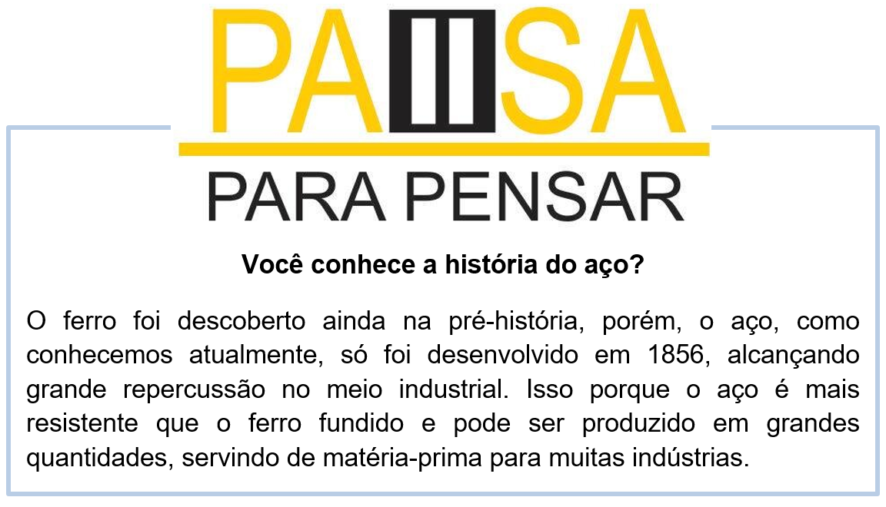
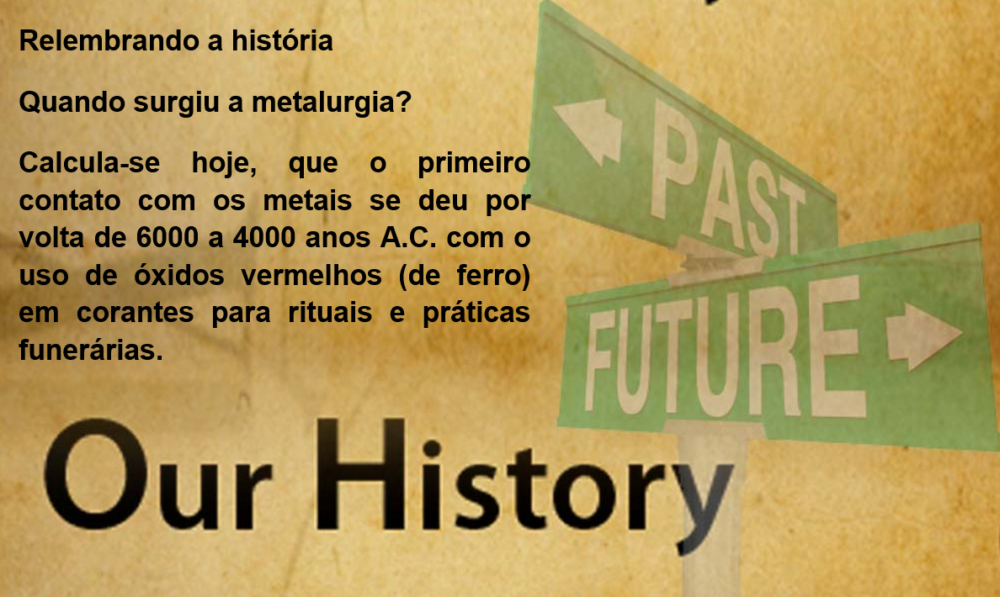

Capítulo 1: Metallurgy – Metalúrgica
Metallurgy is defined as a process that is used for the extraction of metals in their pure form. The compounds of metals mixed with soil, limestone, sand, and rocks are known as minerals. Metals are commercially extracted from minerals at low cost and minimum effort. These minerals are known as ores. A substance which is added to the charge in the furnace to remove the gangue (impurities) is known as flux. Metallurgy deals with the process of purification of metals and the formation of alloys.
Iniciamos nossa unidade com o vocabulário de metalurgia. Acima temos um texto explicativo sobre os processos dessa indústria.
Ao lado temos um processo de purificação de metais. Vamos ler a tradução do texto introdutório e expandir nossos conhecimentos nessa área.
Metalurgia é definida como um processo usado para a extração de metais em sua forma pura. Os compostos de metais misturados ao solo, calcário, areia e rochas são conhecidos como minerais. Os metais são extraídos comercialmente de minerais a baixo custo e esforço mínimo. Esses minerais são conhecidos como minérios. Uma substância que é adicionada à carga no forno para remover a ganga (impurezas) é conhecida como fluxo. A metalurgia lida com o processo de purificação de metais e a formação de ligas.

Na nossa dica da biblioteca temos um dicionário de termos técnicos utilizados na metalurgia em geral. Português-Inglês / Inglês-Português. Criado pela Faculdade de Tecnologia de Sorocaba.

Contextualizando – metais e outros materiais
Aqui temos uma lista básica dos principais metais usados na indústria metalúrgica.
aluminium > alumínio
brass > bronze
bronze > bronze
copper >cobre
gold > ouro
iron > ferro
lead > chumbo
magnesium > magnésio
mercury > mercúrio
nickel > níquel
silver > prata
steel > aço
Outros materiais utilizados na metalurgia
charcoal > carvão vegetal
coal > carvão mineral
gas > gás
oil > petróleo
paraffin > parafina
petrol > gasolina

Reconstruindo o conhecimento – Linking words - conjunções
Linking Words. As linking words são conjunções (conjunctions) que funcionam como conectivos nas frases. Assim, elas desempenham o papel de conectar ideias unindo termos ou mesmo orações. Por esse motivo, são elementos essenciais da comunicação posto que colaboram com a coesão e coerência textuais. Subordinating Conjunctions (conjunções subordinativas): ligam orações dependentes (dependent clause) com outras independentes (independent clause).
Veja abaixo as principais subordinating conjunctions:
Aplicando ao nosso vocabulário
While the solder does the metal window I cut the aluminium. > Enquanto o soldador faz a janela de metal eu corto o alumínio.
The boss went to metallurgy before I finishing my work. > O chefe foi embora para a metalurgia antes de eu terminar meu trabalho.
O que aprendi
• Nesta unidade aprendemos o vocabulário de metalurgia;
• Aprendemos sobre os metais e suas aplicações;
• Vimos a história do aço;
• Na gramática, aplicamos as linking words, palavras usadas para fazer ligação entre termos de uma oração.
Praticando
Observe a imagem com objetos feitos na metalurgia. Liste os metais em inglês usando da produção de cada material
Nesse texto temos a presença de vários elementos gramaticais e um vocabulário variado que vai de cores, partes do corpo humano a materiais de construção civil.
Trata de uma narrativa descritiva do trabalhador (the worker). Vamos à tradução:
O trabalhador está usando argamassa para colar os tijolos. A ferramenta em sua mão é chamada de espátula e há um balde verde perto de seus pés. Um profissional especializado em trabalhar com tijolos e pedras é chamado de pedreiro.
Aluminium
__________
__________
__________
Leia com atenção o texto e responda: Qual a importância da metalurgia?
What is the importance of metallurgy?
The Role of Metallurgy in Today's Society. We live in a material world. Today, it is the role of the materials engineer to study, develop, design and operate processes that transform raw materials into useful engineering products intended to improve the quality of our lives.
Observe a frase e escolha a linking word correta para completar o espaço. Analise a tradução para facilitar a sua escolha.
He was doing the dishes _________ I was watching tv. > Ele estava lavando os pratos enquanto eu estava assistindo televisão.